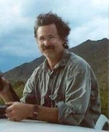

Contact William Battle Montgomery:
William Battle Montgomery
P.O. Box 656
Elgin, Texas 78621
wbmont@gmail.com

William B. Montgomery is a painter and printmaker who lives near Elgin, Texas. Born and raised in Tyler, Texas, he studied art at the Kansas City Art Institute and the University of New Mexico. While studying at the Academia di Belle Arti de Perugia in Italy, he developed an interest in classical European painting which had a major influence on both his painting technique as well has his approach to subject matter. A life long fascination with nature is a continuing influence and his current work explores animals and their environments, particularly their convergence with civilization.
Montgomery is also an accomplished printmaker. His twin interests in natural history and traditional etching techniques contribute to skilled and sometimes humorous prints, mainly of Texas and its residents. His scientifically precise etchings of snakes have appeared on the covers of a number of important herpetology books.
Montgomery is currently working on a series of paintings about the Nueces River of Texas, as part of a book he is collaborating on with his wife, author and artist Margie Crisp.
NUECES RIVER PROJECT
https://nuecesriverbook.wordpress.com
Galleries
Please contact the artist or one of his galleries to inquire about purchasing prints or paintings.
Prices are subject to change.
Valley House Gallery
Cheryl & Kevin Vogel
6616 Spring Valley Rd.
Dallas, TX 75254
972-239-2441
www.valleyhouse.com
gallery@valleyhouse.com
TASTE: Wine & Art
Susan Kirchman
213 N Nugent Street
Johnson City, Texas 78636
512-851-8199
http://www.tastewineart.com
Reaves | Foltz Fine Art
Sarah Foltz, Gallery Director
2143 Westheimer
Houston, TX 77098
713-521-7500
www.reavesart.com
info@reavesart.com